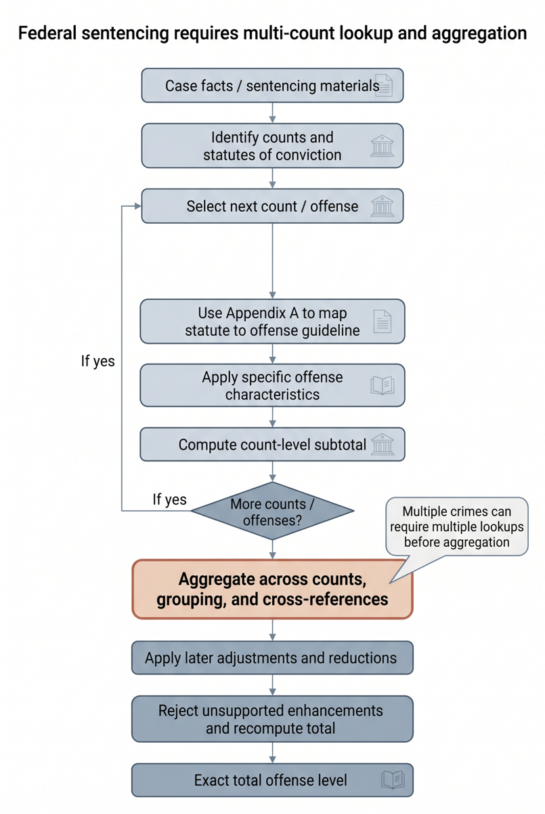
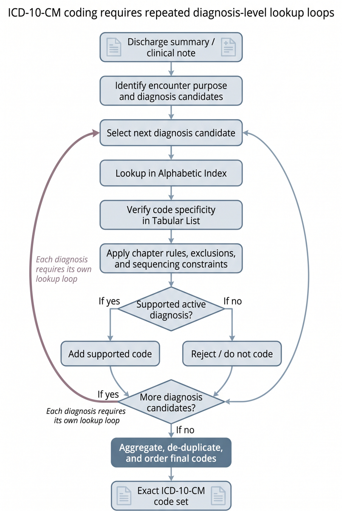
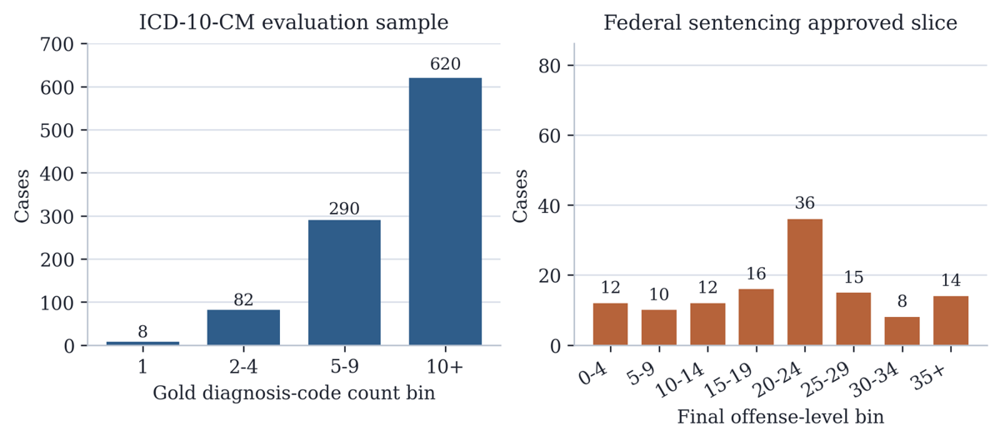

TL;DR : TAM est un benchmark de procedural reasoning long-horizon où la réponse se calcule en appliquant un manuel officiel (ICD-10-CM ; USSG + Title 18) — donc vérifiable par exact match — et sur lequel quatre harness GPT-5 représentatifs (RAG simple, RAG agentique, ReAct outillé, agent harness Deep Agents) plafonnent à 1 % d'EM en codage ICD et 15,5 % en sentencing.
Claim principal précis : sur des tâches dont la vérité terrain est mécaniquement dérivable d'un manuel de dizaines de milliers de règles, l'accès à l'information (retrieval, outils de navigation, décomposition en workers) ne suffit pas — l'EM reste ≤ 1 % (ICD-10-CM, n=1 000) et ≤ 15,5 % (sentencing fédéral, n=200) avec GPT-5, alors que les mêmes familles de méthodes réussissent les benchmarks multi-hop courts [§1, Tab. 1].
⚠️ Pour mon usage, l'intérêt n'est pas le constat d'échec (attendu) mais le patron de construction : c'est le seul papier de la revue où une procédure juridique longue et normative possède un vérifieur exact et public, manuels compris.
Aucune tâche synthétique ni générée par modèle. Les deux splits sont minés dans des archives réelles, avec un LLM utilisé uniquement en filtrage/extraction, jamais en génération de la réponse [§4.1, §4.2].
Label = le code set assigné par les codeurs de l'hôpital, repris tel quel : « we treat these coder-assigned labels as the reference target » [§4.1]. Aucune re-validation par les auteurs.
Curation en trois étages, à partir de CourtListener : 1. Sélection par disponibilité documentaire (pas d'échantillonnage arbitraire) : dockets 2021-2025 contenant à la fois ≥ 1 sentencing memorandum éligible et ≥ 1 document factuel hors-plaidoyer → 833 dockets candidats. Les plea agreements, factual proffers et statements of facts sont conservés quand présents. 2. Dérivation du label : on prend l'offense level proposé dans le sentencing memorandum retenu, en préférant le mémoire du gouvernement quand il existe ; le bundle documentaire complet sert à assembler les faits de l'espèce. 3. Audit de suffisance par LLM : rejet des dockets dont le dossier est trop pauvre pour reconstruire cet offense level → 250 dockets suffisants. 4. Vérification humaine : contrôle de la suffisance des sources et confirmation que les documents soutiennent l'offense level admis → 200 cas approuvés. Les auteurs insistent : « Accepted cases are therefore not carried forward from a single automated extraction pass alone », et assument de privilégier la qualité du label sur le volume [§4.2].
⚠️ Point critique sur la vérité terrain. Le label est la position proposée par une partie (de préférence l'accusation), pas nécessairement le calcul retenu par le juge. L'humain valide que les pièces soutiennent ce chiffre, pas qu'un tribunal l'a adopté. Pour un env RL, c'est un biais systématique vers le calcul le plus sévère (le gouvernement plaide les enhancements). Le papier ne mesure jamais l'écart entre offense level proposé et offense level retenu au jugement : non précisé.
Coût humain : nombre d'annotateurs, profil (juristes ? codeurs certifiés ?), heures, accord inter-annotateurs → non précisé sur toute la ligne. C'est le trou le plus gênant du papier.
| ICD-10-CM | Sentencing | |
|---|---|---|
| Cas évalués | 1 000 (sur 38 332 éligibles) | 200 (sur 833 candidats → 250 suffisants) |
| Sortie | code set exact, ordre ignoré | entier (offense level) |
| Densité | 12,85 codes/cas en moyenne, médiane 12, p90 23, p99 36, 620 cas à ≥ 10 codes ; 2 555 codes uniques [§4.1] | ~65 faits extraits/cas, 3,07 documents/cas ; niveaux de 2 à 43, moyenne 20,74, médiane 21, p90 35, p99 43 [§4.2] |
| Manuel | guidelines 120 p. + Index alphabétique 1 304 p. (7 995 main terms) + Tabular List 1 942 p. (34 502 codes feuilles, 21 chapitres) [§4.1] | 5 archives Title 18 + 5 manuels USSG (2021-2025) ; Title 18 2024 = 1 396 section heads ; USSG 2021 = 608 p. [§4.2] |
Vérification indépendante du dataset publié (mes calculs sur data/legal/dataset.csv, 2026-10-19) : 200 lignes ✓, médiane 21 ✓, ~64,3 faits/cas ✓ (« ~65 » annoncé), mais moyenne 20,64 (vs 20,74 annoncé) et max 44 (vs plage « 2 to 43 » annoncée). Voir §7.0.
Aucun. Pas de filtrage par difficulté-modèle, pas de pass@k du modèle de base, pas de curriculum (c'est un benchmark statique, pas un env d'entraînement). Les auteurs filtrent sur la cohérence d'édition du manuel et la suffisance documentaire — deux axes orthogonaux à la difficulté.
Pas de split train/test : tout est test. Contamination traitée honnêtement pour ICD seulement : « MIMIC-IV is public so prior exposure of LLMs to some of its records cannot be ruled out. If such exposure occurred, it would only make the ICD task easier […] and therefore makes the current low exact-match results conservative » [§4.1]. ⚠️ L'argument est valide mais n'est pas repris pour le split legal, alors que CourtListener est tout aussi public et que les sentencing memoranda y sont intégralement indexés : non précisé.
Sans objet : aucun entraînement.
Quatre harness sur les mêmes inputs, les mêmes manuels ; seule varie l'exposition du manuel [§5, §6].
docket_id, input, output, input étant une liste à puces de ~64 faits ([HF] data/legal/dataset.csv), p. ex. « - Defendant A agreed to plead guilty to a one-count charge of being a felon in possession of a firearm under 18 U.S.C. § 922(g)(1). ». output = un entier nu.⚠️ Conséquence majeure pour un env RL : le dataset publié ne contient aucune supervision de processus — seulement (faits, entier final). Le prompt de curation produisait pourtant un artefact contenant « offense-level steps » [App. A.4], non publié. Les étapes existent côté curation mais n'ont pas été livrées.
baselines/*_deepagents/skills/*/SKILL.md]. Mêmes outils de navigation que ReAct, « to keep the comparison fair » [§5.3].Signatures réelles des 7 outils legal (le papier ne donne que les rôles ; signatures relevées dans [repo] baselines/legal_react_v2/tools.py) :
list_title18_chapters(year)
open_title18_chapter(year, chapter_id)
open_title18_section(year, entry_id)
list_appendix_a_entries(year, statute_prefix=None, limit=50)
open_ussg_section(year, section_citation)
list_ussg_chapters(year)
open_ussg_subheading(year, subheading_id)
⚠️ Le choix de design le plus important du papier, et il n'est pas commenté par les auteurs : year est un paramètre obligatoire de chaque outil, et il n'est pas injecté — l'agent doit l'inférer des faits de l'espèce (« Stay grounded in the case year when choosing which manual edition to inspect » [repo] system_prompt.jinja2). Le versionnement temporel du droit est donc une contrainte de l'API d'outils, pas une convention de prompt. C'est exactement le mécanisme qu'il faut pour un env juridique multi-millésimes.
Multi-turn pour ReAct et le harness. Horizon typique et maximal, budget de tours, troncature/résumé du contexte long : non précisé dans le papier, et je n'ai trouvé ni max_iterations ni recursion_limit dans baselines/legal_react_v2/agent.py ou config.py [repo]. La seule gestion du contexte long documentée est architecturale : le harness « gives each worker only the local context relevant to its step » au lieu d'une conversation unique qui grossit [§5.3].
Pas de sandbox ni de simulateur : manuels statiques lus localement. Backend de retrieval configurable, index vectoriel local par défaut (TAM_SEARCH_BACKEND=local) ou Azure AI Search [repo .env.example]. Les manuels sont livrés dans le dépôt (XML ICD 2019 complet : tabular, index, eindex, neoplasm, drug ; 6 archives HTML de Title 18 ; 5 GLMFull.pdf USSG). Déterminisme, reset, timeouts, température : non précisé.
system_prompt.jinja2 : {"offense_level": integer or null, "justifications": [...]}, « Do not include any fields other than… ».null et une mauvaise réponse valent pareil (zéro) : l'instruction d'abstention coûte de l'EM sans contrepartie métrique. Le papier ne rapporte jamais le taux de null : non précisé.system_prompt.jinja2).Trois chefs : conspiration de fraude bancaire, vol d'identité aggravé, conspiration cannabis. 1. Traiter chef par chef ; fixer l'année de manuel pour que statut, mapping Appendix A et sections viennent de la même édition. 2. Chef 1 → USSG §§ 2X1.1 et 2B1.1 : base 7, +16 (loss), +2 (nombre de victimes), +2 (sophisticated means), +3 (rôle) = 30. 3. Chef 3 → USSG § 2D1.1 : base 24, +2 (maintien d'un local), +3 (rôle) = 29. 4. Chef 2 reste hors arithmétique groupée (18 U.S.C. § 1028A). 5. § 3D1.4 : le groupe à 30 compte 1 Unit, le groupe à 29 ajoute 1 Unit (un seul niveau d'écart) ; 2 Units → +2 ⇒ 32. 6. − 3 au titre de § 3E1.1 (acceptation de responsabilité) ⇒ offense level final = 29.
Trace ICD équivalente en App. C : 17 codes retenus, K5900, J690, G9341, C7951, F0391, F05, R4701, C61, G40909, E119, T402X5A, G893, R531, I10, E785, Z794, Z8673, avec l'instruction de manuel saillante T40.2X5A (effet indésirable d'opioïdes) qui oblige à ouvrir un chemin de code supplémentaire que la narration ne mentionne pas explicitement.
Exact match pur, aucun juge LLM, aucun reward model, aucune rubrique au scoring. Les auteurs le justifient comme critère de succès end-to-end : « each TAM instance has a single manual-governed final output, and a system solves the instance only if it terminates with that exact output. […] exact match is not meant to summarize partial progress; it is the benchmark's strict test » [§6.2 Metrics].
EM = (1/N) Σ 1[ŷᵢ = yᵢ]. - ICD : égalité ensembliste du code set, ordre ignoré ; l'ordre est évalué séparément par la primary-diagnosis accuracy (premier code prédit = diagnostic principal de référence). - Legal : égalité de l'entier offense level.
Outcome only, binaire — plus trois métriques de crédit partiel rapportées à côté (jamais agrégées en un score composite) : - ICD : précision et rappel micro-moyennés sur les codes (Σ|Sᵢ ∩ Ŝᵢ| / Σ|Ŝᵢ| et / Σ|Sᵢ|), plus primary-diagnosis accuracy. - Legal : MAE = (1/N) Σ |ôᵢ − oᵢ| sur les niveaux d'infraction.
Les auteurs assument la lecture conjointe : les métriques secondaires « quantify locally correct partial progress even when the overall trajectory is globally invalid », et permettent de distinguer « whether a model reaches the exact final answer » de « how much correct structure it recovers along the way » [§6.2].
✅ C'est le point à retenir pour un reward juridique : la MAE sur l'offense level est une distance dense, ordinale et calibrée en conséquences réelles — les auteurs rappellent que, sous la Sentencing Table USSG, un décalage de trois niveaux augmente la fourchette de peine de dizaines de mois, et de bien plus de cinq ans dans les cas graves [§6.1]. On a donc, gratuitement, un reward shaping dont l'échelle a un sens normatif et non arbitraire.
Aucun : pas de bonus de format, pas de pénalité de longueur, pas de pénalité de nombre d'appels d'outils. Le format est contraint par le prompt, pas par le score.
C'est la faiblesse centrale. Le scorer est trivialement fiable (comparaison d'un entier ou de deux ensembles) ; c'est le label qui n'est pas validé quantitativement. - ICD : aucun accord inter-codeurs mesuré. Les auteurs ne traitent la question que par un argument de borne : « Although coder disagreement can lower the absolute ceiling for exact-match evaluation, even the strongest partial ICD results reach only 37 % recall and 50,1 % primary-diagnosis accuracy, suggesting that the gap is unlikely to be explained by label noise alone » [§6.1]. ⚠️ Argument recevable pour expliquer l'ampleur de l'échec, inutilisable pour calibrer un reward : on ne sait pas si l'EM ICD a un plafond de 80 % ou de 30 %. - Legal : vérification humaine binaire (admis / rejeté) sur 250 dockets → 200. Pas de double annotation, pas de κ, pas de taux de faux positifs/négatifs. Non précisé.
Pas de juge au scoring. Un LLM intervient en amont, au moment de la curation, et ses deux prompts sont les artefacts les plus réutilisables du papier [App. A.4] :
Prompt de vérification d'offense level — « Primary objective: convert one docket bundle into a structured offense-level review artifact (...) Grounding rules: use only the docket bundle and current tool outputs, prefer direct document evidence over legal intuition, surface incompleteness explicitly, and return null when the total offense level is not supportable. (...) Workflow: identify the strongest sentencing documents, derive the offense-level calculation from sentencing information first, then substantiate each step with docket facts while keeping the claim, sentencing evidence, guideline support, and justification separately legible. (...) Returned artifact: docket id, support status, selected documents, case facts, offense-level steps, final total offense level. »
Prompt d'extraction des faits — « Return only valid JSON with a case_facts list. (...) Extraction rules: extract all grounded case facts in the docket bundle, not just those used in the offense-level computation; prefer high recall over brevity; keep facts atomic and concrete; and include procedural facts, charge facts, plea facts, admitted conduct, loss figures, and other grounded details needed for downstream reconstruction. (...) Exclude guideline rules, offense-level arithmetic, and personally identifying information, and rewrite mixed fact-plus-sentencing sentences so that only the underlying factual content remains. »
✅ Deux décisions de conception remarquables dans ce second prompt : (a) extraire plus de faits que ceux nécessaires au calcul, pour que la tâche ne soit pas un QCM déguisé ; (b) exclure explicitement les règles de guideline, l'arithmétique d'offense level et les PII de l'input, et réécrire les phrases mixtes fait+peine pour ne garder que le factuel. C'est la prévention de fuite du label dans l'observation, faite correctement — et c'est transposable tel quel.
Le vérifieur n'a jamais été attaqué ni testé contre le hacking, et le papier ne l'évoque pas. ⚠️ Crédible ici : avec un reward outcome-only sur un entier, à l'inférence, sans optimisation, il n'y a rien à hacker. Mais si on branche du RL dessus, la surface est immédiate : (a) l'output legal est un entier dans [2, 43] avec un mode marqué à 20-24 — une politique dégénérée qui prédit toujours 21 obtient un EM non nul et une MAE honorable sans jamais ouvrir un manuel ; (b) les justifications ne sont pas scorées, donc rien ne force le lien entre le chiffre et le texte inspecté. Un reward RLVR naïf sur TAM récompenserait le prior statistique sur les peines, pas la procédure.
Non applicable : aucun entraînement, aucun RL, aucun SFT. Tout est prompting-based et les auteurs l'assument comme limite (« We also evaluate representative prompting-based baselines rather than an exhaustive set of specialized or trained systems » [§8]).
Ce qui tient lieu de configuration d'inférence, pour mémoire :
- Modèle : openai:gpt-5, snapshot non pinné ; embeddings text-embedding-3-large [repo .env.example].
- Température, top-p, budget de reasoning tokens, nombre max de tours, seeds : non précisé (ni papier ni fichiers de config consultés).
- Une seule passe par cas (Each case contributes one final prediction [§6.1]), donc pas de pass@k, pas de self-consistency, pas de best-of-n.
- Compute, coût, durée : non précisé.
⚠️ L'absence de budget d'appels/tokens par baseline empêche de savoir si l'agent harness gagne en primary-dx accuracy (50,1 % vs 45,7 %) grâce à sa décomposition ou simplement parce qu'il consomme plus de compute. Les auteurs écrivent « to keep the comparison fair » à propos des outils [§5.3], jamais à propos du compute.
Direction de recherche annoncée, pertinente pour nous : « stronger state tracking, explicit verification before finalization, and mechanisms for revision or backtracking after early mistakes » [§7].
Protocole : 50 trajectoires ReAct non-exactes analysées (25 ICD + 25 sentencing), chacune étiquetée par sa première divergence visible. Les auteurs posent eux-mêmes la limite : « We use these labels as a descriptive view of recurring failure patterns rather than a precise estimate of population frequencies » [§6.3].
| Failure mode | Total | ICD | Legal | Comportement | Détection | Correction |
|---|---|---|---|---|---|---|
| Global inconsistency | 38/50 | 22/25 | 16/25 | ICD : mauvais lead term ou mauvaise famille de codes choisie tôt, puis déroulé cohérent dans la mauvaise branche diagnostique. Legal : mauvais guideline anchor, ou étape d'agrégation effectuée sans contrôle d'état global | annotation manuelle de la 1re divergence | aucune ; listée en future work (state tracking, backtracking) |
| Incomplete execution | 7/50 | 3/25 | 4/25 | ICD : arrêt avant le balayage complet des diagnostics secondaires. Legal : trajectoire qui ne va jamais jusqu'à une détermination complète de l'offense level — « the model begins a plausible procedure but terminates before it verifies global completeness » | idem | aucune ; le prompt ReAct contient déjà une consigne de « final completeness sweep », manifestement non suivie |
| Missing required elements | 5/50 | 0/25 | 5/25 | oubli d'une réduction obligatoire ou dérapage sur une contrainte de fin de procédure, après être pourtant entré sur le bon chemin de guideline | idem | aucune |
Lecture des auteurs : si ce mode n'apparaît jamais en ICD comme première divergence, c'est que « ICD trajectories more often fail earlier by entering the wrong branch altogether » [§6.3].
Honnêteté méthodologique à noter : « Because retrieval and reasoning are tightly coupled in TAM, we do not try to separate them in this analysis » [§6.3]. ⚠️ Donc on ne sait pas si l'échec est de récupération (le bon § n'est jamais lu) ou de raisonnement (il est lu et mal appliqué). Pour concevoir un env, c'est la distinction qui compte, et elle manque. Elle serait pourtant mesurable à peu de frais puisque les trajectoires enregistrent les appels d'outils.
Quasi rien, et c'est cohérent avec un papier de benchmark : pas de rollouts, pas d'entraînement.
- Parallélisme d'évaluation, débit, durée d'une passe sur 1 000 cas ICD : non précisé.
- Coût par cas / par run : non précisé. ⚠️ Omission regrettable : 1 000 cas ICD × agent multi-tours sur GPT-5 est un coût non trivial, et c'est précisément le chiffre dont j'aurais besoin pour dimensionner un env analogue.
- Indexation : chunking hors ligne (scripts/run_icd_chunking.py, run_legal_chunking.py), index vectoriel local ou Azure AI Search ; pré-chauffage des index de manuel par année (prewarm_legal_manual_indexes) [repo].
- Goulot d'étranglement explicite : aucun identifié par les auteurs. Le seul observé de fait est le content filter (35 cas perdus).
| Chiffre annoncé | Où | Source dans le papier | Verdict |
|---|---|---|---|
| EM 1 % sur ICD-10-CM | abstract, §1, Tab. 1 caption | Tab. 1 : 1 %, 1 %, 1 %, 0,7 % ; identique à [repo] results/paper_results.csv |
confirmé (formulation « 1 % or below » exacte) |
| EM 15,5 % sur sentencing, « best » | abstract, §1 | Tab. 1 : ReAct 15,5 % ; harness 14,5 % | confirmé sur la lettre, sur-généralisé sur le fond — voir ligne suivante |
| « best exact-match performance remains extremely low » (ReAct meilleur en legal) | abstract, §6.1 | §6.1 indique que 35/200 cas du harness n'ont rien rendu (content filter). 14,5 % × 200 = 29 cas justes ; sur les 165 cas réellement répondus, cela fait 17,6 % (mon calcul), donc > 15,5 % | sur-généralisé : le classement des méthodes est confondu par un artefact d'infrastructure. Le papier ne rapporte aucun chiffre filtré sur les cas répondus : introuvable |
| MAE 2,34 (harness, meilleure) | §6.1, Tab. 1 | Tab. 1 ✓, mais le dénominateur (200 ou 165 ?) n'est jamais précisé alors que 35 cas sont sans réponse | introuvable — la MAE du harness n'est pas comparable aux autres sans ce dénominateur |
| « human-validated labels » (les deux domaines) | abstract | §4.2 : vérification humaine réelle sur les 200 cas legal. §4.1 : labels ICD = codes assignés par les codeurs de l'hôpital, « we treat these coder-assigned labels as the reference target », aucune validation par les auteurs | sur-généralisé : vrai pour le split legal (200 cas), faux pour le split ICD (1 000 cas, soit 83 % du benchmark) |
| 200 cas approuvés en sentencing | abstract, §4.2 | Texte ✓ et dataset publié ✓ (200 lignes vérifiées). Mais Fig. 2 (droite), intitulée « Federal sentencing approved slice », totalise 12+10+12+16+36+15+8+14 = 123 cas (mon comptage sur le PNG) | contredit : 200 (texte, données publiées) vs 123 (Fig. 2) |
| Niveaux « range from 2 to 43, mean 20,74, median 21 » | §4.2 | Sur le CSV publié (mon calcul) : min 2 ✓, médiane 21 ✓, mais max 44 et moyenne 20,64. Les bornes de Fig. 2 sont par ailleurs cohérentes avec n=123 | contredit, légèrement : les statistiques publiées semblent calculées sur un snapshot de curation antérieur (~123 cas), pas sur les 200 cas livrés |
| ~65 faits/cas, 3,07 documents/cas | §4.2 | CSV publié : 64,3 faits/cas en moyenne (min 31, max 104), mon calcul | confirmé |
| 38 332 cas éligibles → 1 000 échantillonnés ; 620 cas à ≥ 10 codes | §4.1 | Fig. 2 (gauche) : 8 + 82 + 290 + 620 = 1 000 ✓ | confirmé |
| 833 dockets → 250 suffisants → 200 approuvés | §4.2 | §4.2 uniquement, aucun tableau de funnel | confirmé (cohérent, mais non recoupable) |
Verdict de cohérence : échoué. Les chiffres de tête (EM) sont exacts et recoupent le CSV de résultats publié ; mais trois défauts réels : (1) « human-validated » couvre 17 % du benchmark et est présenté comme général ; (2) Fig. 2 et les statistiques de §4.2 décrivent un jeu de 123 cas, pas les 200 livrés ; (3) le classement des méthodes en legal est invalidé par 35 cas perdus au content filter, sans que le papier ne recalcule rien.
| Baseline | ICD EM | ICD Préc. | ICD Rappel | ICD Prim. Dx | Legal EM | Legal MAE |
|---|---|---|---|---|---|---|
| Single-pass RAG | 1 % | 52 % | 33 % | 42,7 % | 7,5 % | 2,87 |
| Agentic RAG | 1 % | 59 % | 37 % | 45,7 % | 11 % | 2,80 |
| ReAct-style tool use | 1 % | 58,88 % | 26,82 % | 20 % | 15,5 % | 3,04 |
| Agent harness (Deep Agents) | 0,7 % | 59,9 % | 27,4 % | 50,1 % | 14,5 %¹ | 2,34¹ |
¹ 35/200 cas sans réponse (content filtering) ; dénominateur non précisé [§6.1].
Où les modèles échouent dans la procédure (la question qui m'intéresse) : - Tôt, et de façon irrécupérable : 38/50 trajectoires divergent dès l'ancrage (mauvais lead term ICD, mauvais guideline anchor USSG) puis restent localement cohérentes. Ce n'est pas du bruit de fin de chaîne, c'est une erreur de sélection initiale amplifiée. - À l'agrégation : en legal, la seconde cause est l'agrégation « performed without a global state check » [§6.3] — c'est-à-dire précisément l'étape § 3D1.4 (Units → bonus de niveaux) puis la recomposition. Cohérent avec une MAE de ~2,3-3,0 niveaux : l'ordre de grandeur d'un ou deux ajustements manqués, pas d'un calcul aléatoire. - En fin de procédure : 5/25 trajectoires legal oublient une réduction obligatoire (typiquement § 3E1.1, −3) après un chemin par ailleurs correct. - Le profil précision/rappel ICD (≈ 59 % / ≈ 27-37 %) dit que les modèles produisent des codes majoritairement justes mais très incomplets : la procédure n'est pas exécutée jusqu'au balayage exhaustif des diagnostics secondaires.
⚠️ Mon réserve sur l'EM ICD : avec 12,85 codes de référence par cas et un rappel de 37 %, un EM de 1 % est une quasi-tautologie arithmétique, pas une mesure. Le split ICD ne distingue aucune méthode (1 %, 1 %, 1 %, 0,7 %) et n'a donc aucun pouvoir discriminant. Le seul signal exploitable du papier est le split legal, où EM varie de 7,5 % à 15,5 % (facteur 2) et MAE de 2,34 à 3,04. C'est heureux pour moi, et c'est aussi ce qui rend ce papier pertinent : l'« arithmétique du droit » donne une cible à faible cardinalité, donc un EM informatif, là où le codage multi-label ne le fait pas.
Rien. Aucun transfert mesuré : pas d'entraînement, donc pas de question ID/OOD ; pas d'évaluation croisée ICD↔legal ; et surtout les baselines ne sont jamais passées sur un benchmark court-horizon (HotpotQA, MuSiQue) pour établir le contraste qui fonde tout l'argument. L'écart « court-horizon facile / long-horizon dur » repose entièrement sur des chiffres cités d'autres papiers [§1, §3.1].
Aucune au sens strict. Les quatre baselines constituent une variation de design (retrieval ↔ outils ↔ décomposition), pas une ablation isolant une contribution revendiquée. Ce qu'on peut en tirer : - La décomposition en workers achète de la précision d'ancrage (primary-dx 50,1 %, meilleure du tableau) et la meilleure MAE, mais pas de rappel (27,4 %). - Les outils de navigation fins dégradent l'ICD (primary-dx 20 %) et améliorent le legal (EM 15,5 %, meilleur) — plausiblement parce que la sortie legal est unique et profonde tandis que la sortie ICD est multiple et large. - Les auteurs mentionnent une ablation non chiffrée : « In preliminary experiments, more generic RAG setups performed even worse, so the reported variants use light domain-aware chunking and source metadata » [§5.1]. Aucun chiffre → inexploitable.
Aucun : un seul modèle, une seule taille, un seul budget. Pas de courbe, pas de petit modèle, pas d'open-weight.
results/paper_results.csv qui recoupe Tab. 1 au chiffre près, et les manuels eux-mêmes (XML ICD 2019, 6 archives Title 18, 5 USSG). Seule réserve : les 1 000 cas ICD ne sont pas redistribuables (MIMIC-IV), reconstructibles via build_mimic_icd10_dataset_2017_2019.py avec un accès PhysioNet credentialed.Verdict : plausible mais fragile comme papier d'évaluation — solide comme artefact. Le claim « les LLM ne suivent pas les procédures longues » est quasi certainement vrai, mais ce papier ne l'établit pas rigoureusement (pas de contraste court-horizon, pas de variance, labels non validés, classement confondu par un content filter). En revanche l'artefact — tâches verifiables, manuels versionnés, API d'outils, prompts de curation — est de qualité nettement supérieure au papier, et c'est lui qui m'intéresse. À réutiliser, pas à citer comme preuve.

Ce qu'il faut voir : la structure de l'env, et pourquoi elle est exactement vérifiable. Boucle externe sur les chefs d'accusation (« Select next count / offense » → Appendix A → specific offense characteristics → sous-total par chef → « More counts? »), puis une barre de recomposition (en orange, le point dur signalé par les auteurs : « Aggregate across counts, grouping, and cross-references »), puis les ajustements tardifs, le rejet des enhancements non soutenus et le recalcul du total. Deux propriétés rares s'y lisent : l'horizon est variable et piloté par les données (nombre de chefs), et toute la boucle se termine sur un entier unique — d'où un vérifieur mécanique malgré un raisonnement normatif de dizaines d'étapes. C'est le schéma à copier pour un env juridique.
Ce qu'il faut voir : le même motif de boucle, mais sur une sortie ensembliste — candidat de diagnostic → Index alphabétique → vérification de spécificité dans le Tabular List → règles de chapitre et de séquencement → retenir ou rejeter le code → candidat suivant, puis agrégation/dé-duplication/ordonnancement du code set final [caption Fig. 1]. Le contraste avec la figure précédente explique les résultats : même procédure, mais 12,85 sorties à produire au lieu d'une, donc un EM qui s'effondre à 1 % et ne discrimine plus rien. Pour un env RL, la leçon est de choisir la forme de la cible : entier ordinal (reward dense possible) plutôt qu'ensemble de cardinalité 13 (reward binaire dégénéré).
Ce qu'il faut voir : à gauche, 8 / 82 / 290 / 620 cas par bin de nombre de codes = 1 000, confirmant que l'échantillon ICD est dominé par les cas à haute cardinalité (62 % à ≥ 10 codes). À droite, la distribution des offense levels est unimodale, centrée sur 20-24 (36 cas) avec une queue à 35+ (14 cas) — c'est la surface de reward hacking : un prédicteur constant à 21 n'est pas ridicule sous MAE. Et le détail qui fait tiquer : les barres de droite totalisent 123 cas, pas 200 (mon comptage) ; vérification faite sur le CSV publié, les 200 cas réels se répartissent 19/18/24/26/48/26/17/22. La figure et les statistiques de §4.2 décrivent un snapshot de curation antérieur. Voir §7.0.| Ingrédient | Choix du papier | Équivalent juridique (FR/UE) | Transfert | Ce qui manque |
|---|---|---|---|---|
| Source des tâches | dockets CourtListener filtrés par disponibilité documentaire : 833 → 250 (audit LLM de suffisance) → 200 (validation humaine) [§4.2] | décisions publiées + pièces : Judilibre (Cass./CA), ArianeWeb (CE), EUR-Lex et décisions de la Commission (concurrence), BTI/EBTI (douane), jurisprudence prud'homale | direct : le filtre « le dossier contient-il de quoi reconstituer le calcul ? » est la bonne porte d'entrée, indépendamment de la juridiction | en France, les pièces de procédure ne sont pas publiques comme sur PACER/CourtListener : seule la décision motivée l'est. Donc l'input doit être reconstruit depuis l'exposé des faits de la décision, avec un risque de fuite du label bien plus élevé |
| Label / vérifieur | offense level proposé par le sentencing memorandum, de préférence celui du gouvernement, puis validé humainement [§4.2] ; scorer = égalité d'entiers | montant ou quantum dispositif de la décision, recalculable : indemnité prud'homale (barème art. L.1235-3 C. trav.), indemnité légale de licenciement (art. R.1234-2), pension alimentaire (barème indicatif du ministère), droits de succession (abattement + tarif + réductions), amende de concurrence (lignes directrices 2006 : % de la valeur des ventes × années + droit d'entrée, majorants/minorants, plafond 10 % du CA), classement tarifaire douanier (code NC/TARIC) | direct, et meilleur qu'ici : prendre le chiffre retenu par le juge ou la Commission, pas la position d'une partie. Le papier fait l'inverse et c'est son défaut de conception le plus net | la motivation ne détaille pas toujours l'arithmétique ; il faut sélectionner les décisions où elle est explicite — exactement le rôle de l'audit de suffisance (833→250) |
| Harness / outils | 7-8 outils de navigation, year obligatoire sur chaque appel, manuels livrés avec le code [App. B, repo] |
mêmes primitives sur Légifrance (API DILA, versions datées des codes), TARIC (nomenclature + notes de section/chapitre + RGI 1-6), lignes directrices amendes, barèmes annexés | direct : Légifrance expose nativement les versions datées, donc le paramètre year/date_de_valeur est gratuit et doit être obligatoire, comme ici |
pas d'index vectoriel prêt pour le français ; et il faut une primitive supplémentaire absente de TAM : « résoudre un renvoi » (article → article visé), qui est le cœur du droit codifié français |
| Algo | aucun (prompting seul) | GRPO/RLOO outcome-only sur EM, ou reward shapé par la distance au quantum | non transférable depuis ce papier — il n'y a rien à transférer | tout le loop RL. TAM est un banc d'essai, pas un env ; 200 cas ne suffisent pas comme train set |
| Curriculum | aucun ; filtrage sur la cohérence d'édition du manuel et la suffisance documentaire | difficulté naturellement graduée : nombre de chefs/postes, présence de renvois, de groupement, de plafonds | adaptable : la structure (1 chef → N chefs avec groupement) donne un curriculum gratuit et interprétable | TAM ne stratifie jamais par nombre de chefs et ne publie pas ce champ ; à recalculer |
| Anti-hacking | aucun ; prompt d'extraction qui exclut règles, arithmétique et PII de l'input [App. A.4] | même exclusion, plus : retirer de l'input tout quantum intermédiaire et toute citation de barème | direct pour l'exclusion (c'est le bon réflexe, bien exécuté ici), à inventer pour le reste | pas de pénalité de prédiction constante, pas de contrôle de cohérence chiffre↔justification, justifications jamais scorées. Sous RL, c'est la première fuite à colmater |
Critère : réponse mécaniquement calculable depuis un manuel officiel, mais atteinte par un raisonnement normatif multi-étapes avec renvois. Par ordre de proximité :
⚠️ À l'inverse, ce qui n'a pas cette propriété et où il ne faut pas chercher d'exact match : prestation compensatoire, préjudices corporels (la nomenclature Dintilhac structure les postes, pas les montants), appréciation du caractère abusif d'une clause, et tout le cœur de Harvey LAB / Vals (recherche, rédaction, analyse argumentée).
L'API d'outils avec millésime obligatoire + la cible ordinale à faible cardinalité. Pas le benchmark, pas les résultats : le couple (a) tool(year, …) sur chaque accès au manuel, qui rend l'erreur d'édition impossible à masquer et force l'agent à ancrer temporellement son raisonnement — le problème des sources qui évoluent, résolu au niveau de l'interface plutôt que du prompt ; (b) une sortie entière et ordonnée, qui donne simultanément un EM non dégénéré et une distance dense (MAE) utilisable comme reward shaping, avec une échelle calibrée en conséquences réelles. Les deux ensemble transforment une procédure normative longue en un problème RLVR propre. Le pendant négatif, tout aussi instructif : la sortie ensembliste ICD (12,85 items) détruit l'EM et ne discrimine plus aucune méthode — à ne pas reproduire.
Construire TAM-FR-douane, ~300 cas issus de RTC/BTI publiés : input = description du produit, nettoyée des références de nomenclature par un prompt d'extraction calqué sur App. A.4 ; outils = list_chapters(date), open_chapter_notes(date, chapter), open_nc_position(date, code), search_nc(date, query) ; label = le code TARIC du RTC ; reward = EM strict, plus un crédit partiel par profondeur de préfixe commun (4/6/8 chiffres), ce qui est l'exact analogue ordinal de la MAE de TAM. Puis GRPO outcome-only sur un modèle moyen, 2 seeds.
Résultat attendu, en m'appuyant sur ce papier : un baseline prompting faible (TAM donne 7,5-15,5 % d'EM sur une tâche de difficulté comparable, evidence 2/6 — donc à traiter comme un ordre de grandeur, pas comme une prédiction), des gains RL rapides sur le préfixe (le modèle apprend la bonne branche) bien avant l'EM complet, et le failure mode dominant de TAM qui se reproduit : ancrage initial erroné puis descente cohérente dans la mauvaise branche (38/50 trajectoires [§6.3]). Deux contrôles obligatoires que TAM a omis : (1) un baseline constant / prior de fréquence des chapitres, pour vérifier que le reward n'est pas hackable sans ouvrir la nomenclature ; (2) une condition de contraste court-horizon (même système sur une tâche de lookup à un saut), seule façon d'attribuer l'échec à l'horizon — c'est précisément l'ablation manquante du papier.
Deux, dont une opérationnelle et urgente : 1. Les filtres de sécurité côté serveur se déclenchent-ils sur du texte législatif pénal, et avec quelle fréquence ? TAM perd 35 cas sur 200 (17,5 %) pour cette seule raison, sur le harness le plus sophistiqué, et uniquement sur celui-là [§6.1]. Pour Gemini Law, c'est un risque de première grandeur : un agent juridique lira en permanence du texte sur les armes, les stupéfiants, les violences et la fraude, et un filtre qui coupe silencieusement la génération est indiscernable d'un échec de raisonnement — il corrompt à la fois l'entraînement (rollouts tronqués récompensés à zéro, donc gradient de dégoût pour les affaires pénales) et l'évaluation (ici, il inverse le classement des méthodes). Savoir si une exemption « legal corpus » existe pour le RL post-training conditionne la faisabilité du pénal. 2. A-t-on, en interne ou via un partenaire, l'accès aux calculs étape par étape (décisions de la Commission en concurrence, RTC, motivations détaillées) permettant un process reward et pas seulement un outcome reward ? TAM a produit ces étapes à la curation puis ne les a pas publiées [App. A.4 vs dataset] — c'est l'asset le plus cher à refaire et le plus différenciant.